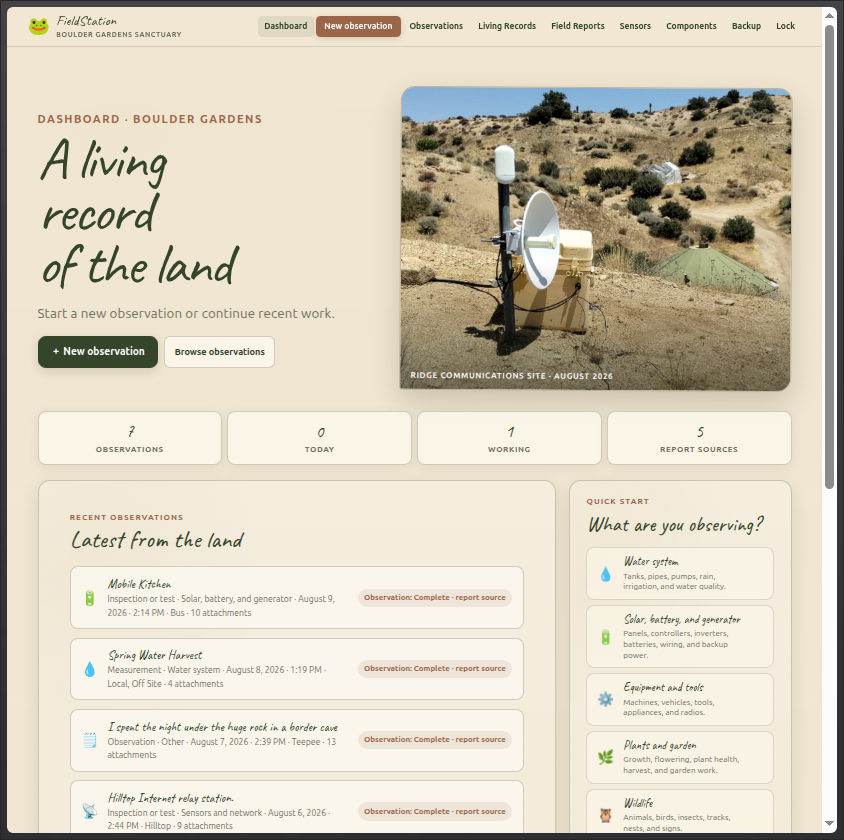
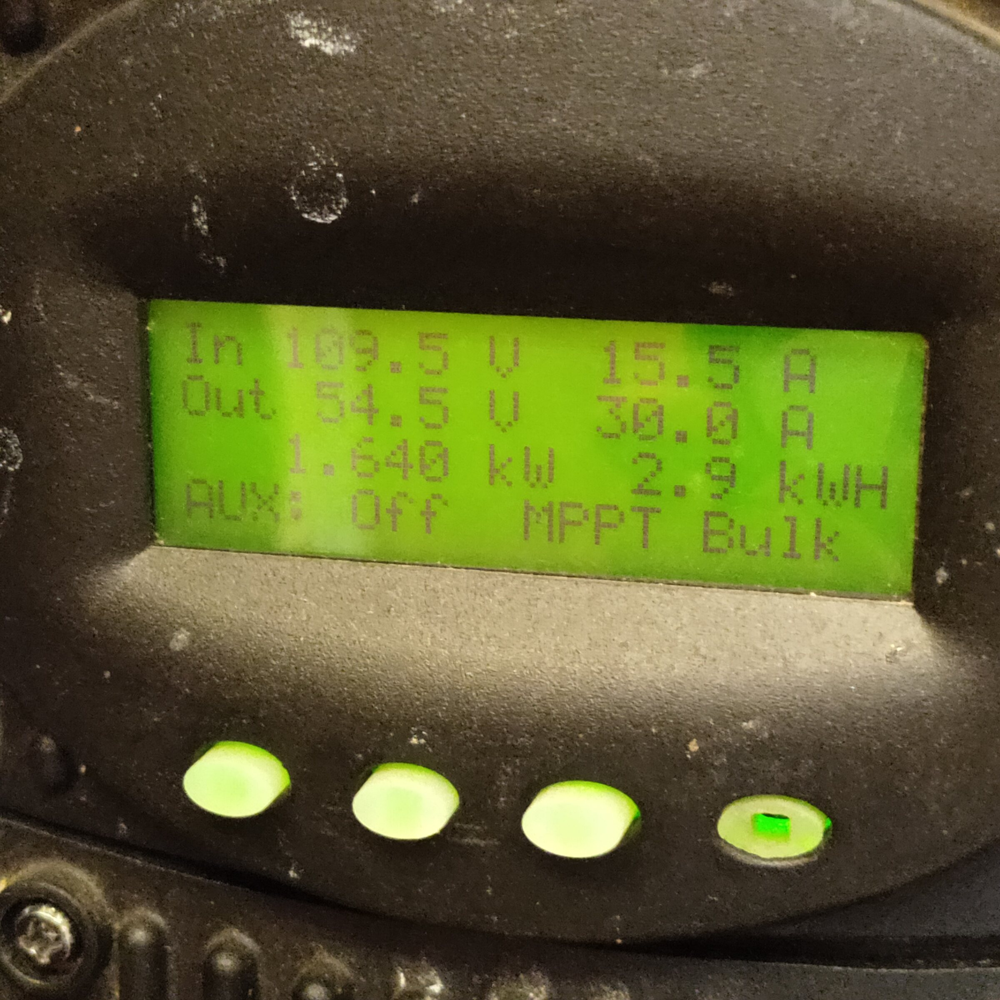
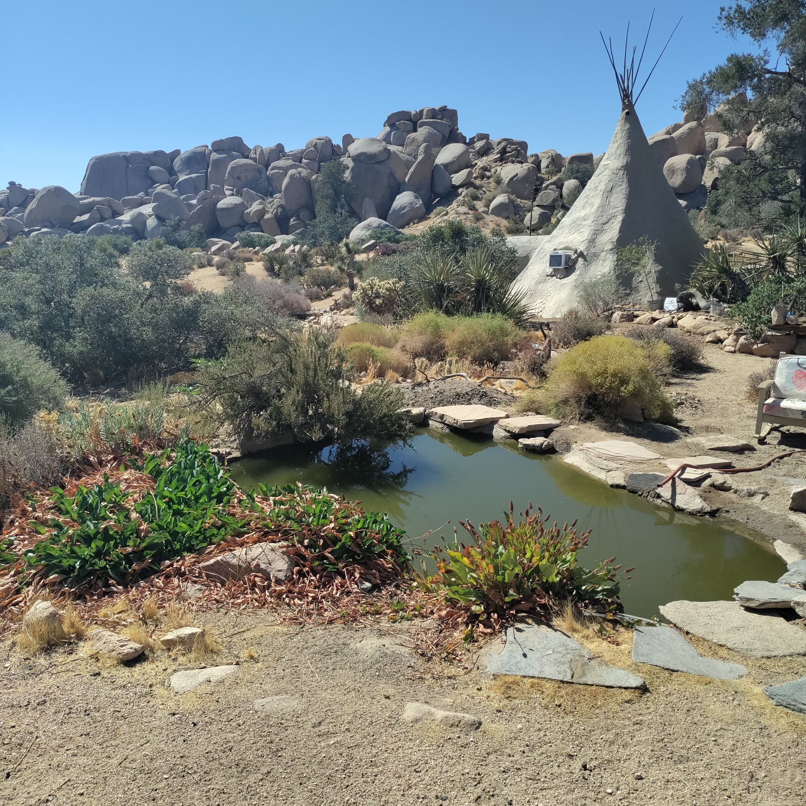
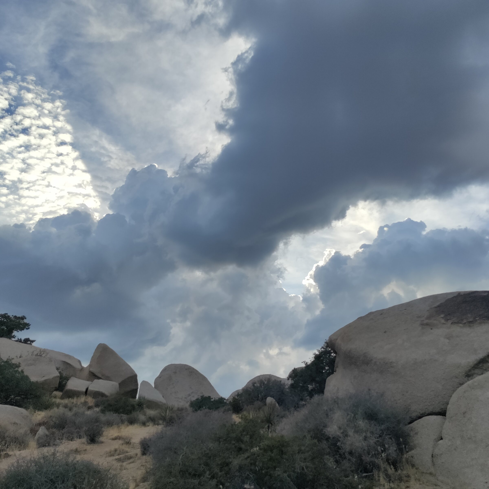
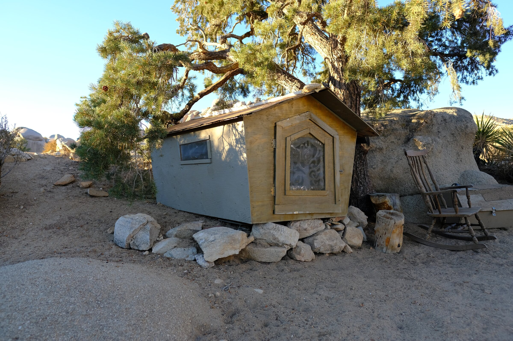
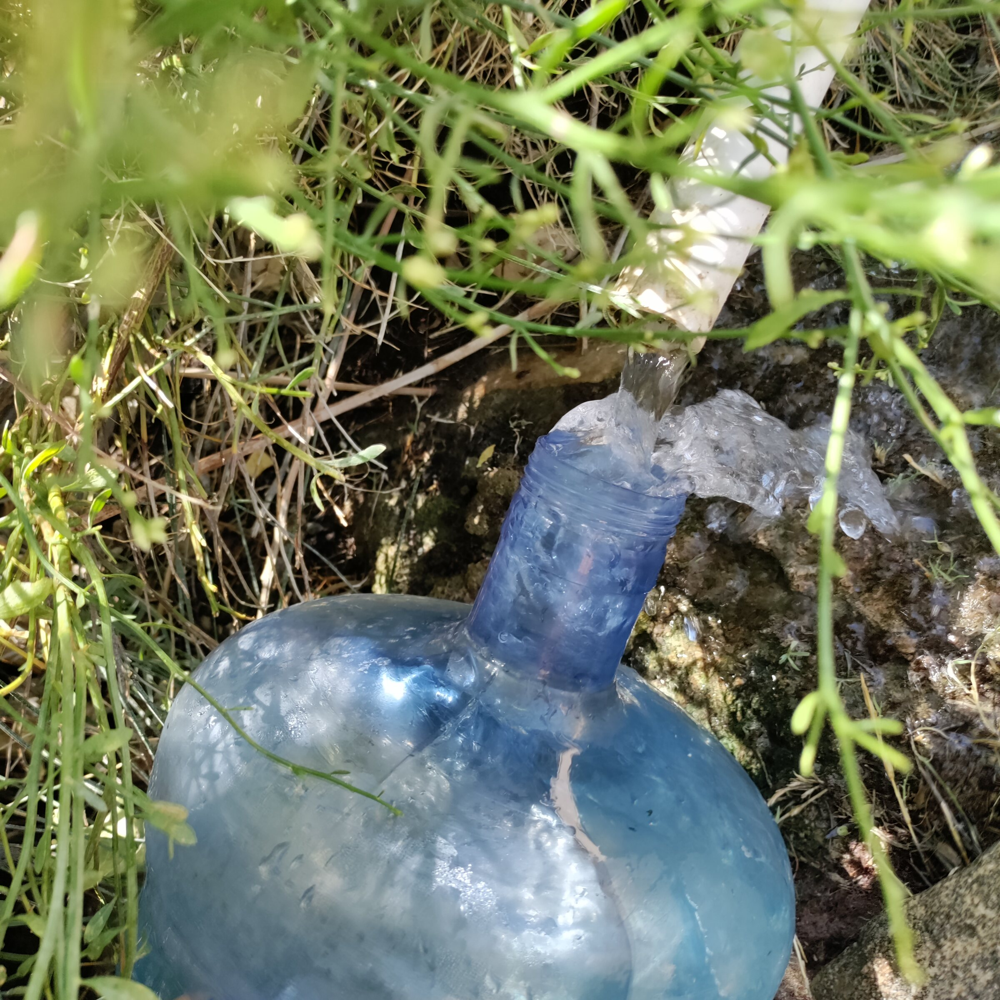
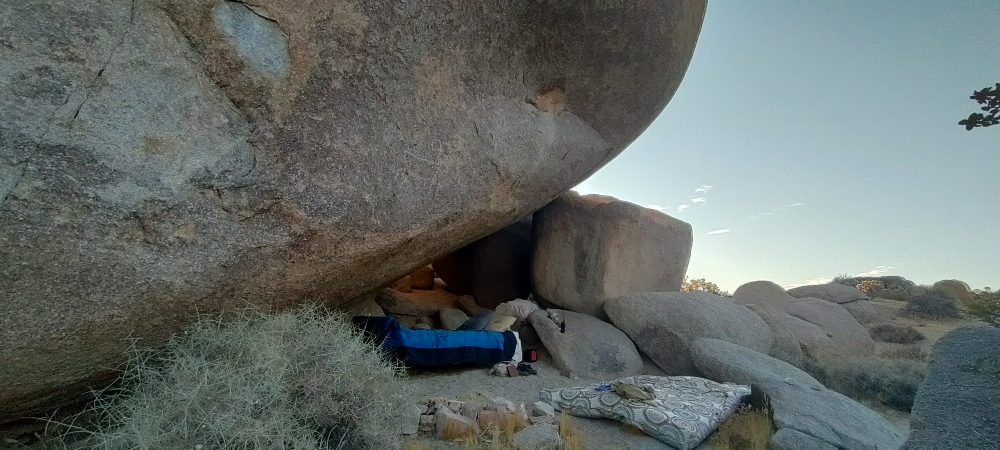
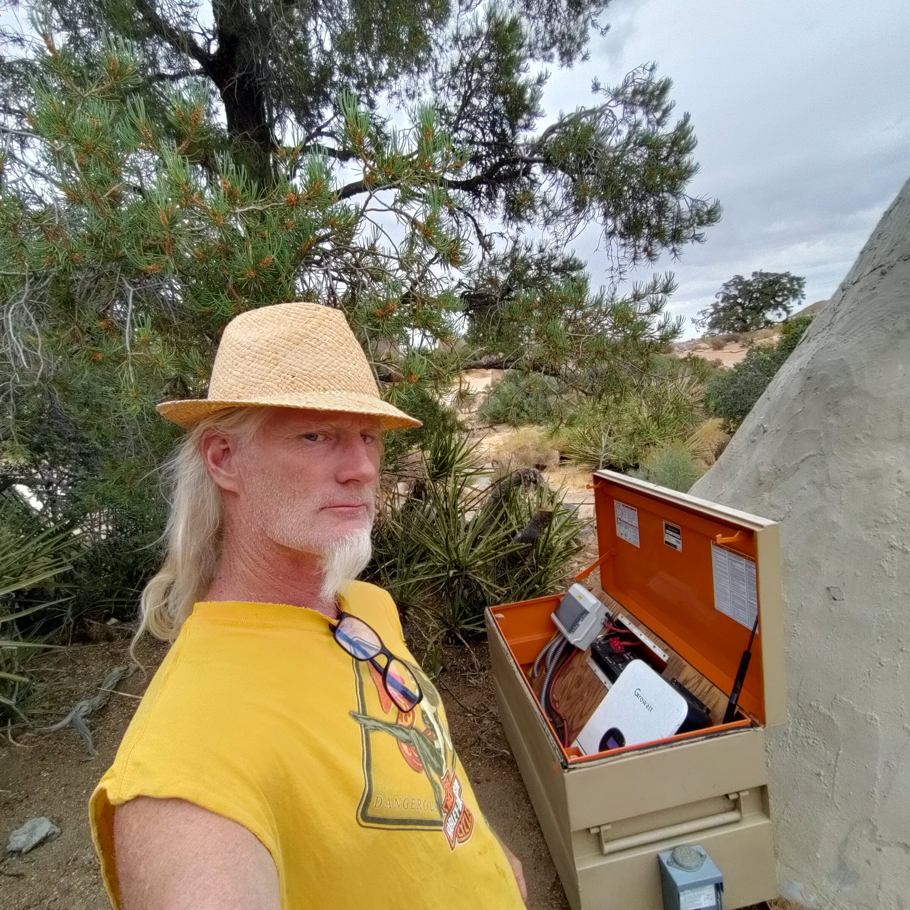
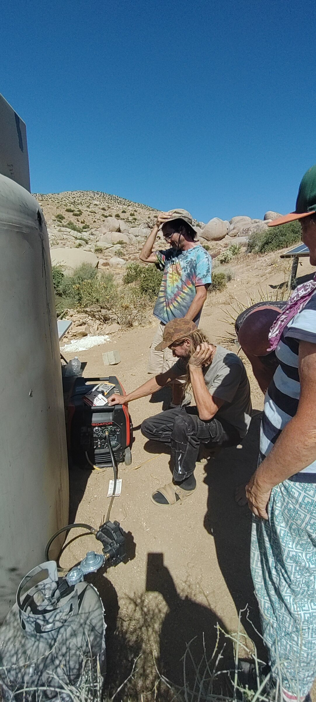
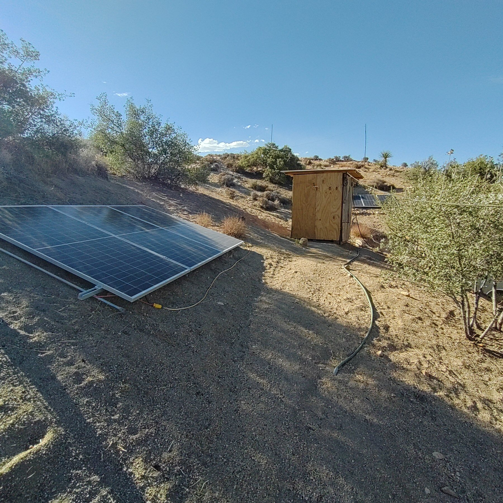

Land & Ecology · Village
Fire Clearance
Fire clearance around my place in the Village.
Read the full observation →Chronological Journal
Short observations made for the casual reader. Technical records and source evidence remain in the workbook.

Newest Observations

Land & Ecology · Village
Fire clearance around my place in the Village.
Read the full observation →
Energy · Boulder Gardens Sanctuary
# Opening Up the Solar Charge Today we took a closer look at the Fieldstation solar system to understand why the batteries rarely seemed to charge beyond about 80 percent and why the solar array appeared to be producing less power than expected.
Read the full observation →
Water · Village Water Tank
Continuous tank-level observations beginning in mid-August provided the first useful picture of everyday water consumption at Boulder Gardens.
Read the full observation →
Land & Ecology · Everywhere
Change of Weather.
Read the full observation →
Projects · Village
This is the bird house I usually sleep in.
Read the full observation →
Projects · Bus
This Project is our mobile kitchen system.
Read the full observation →
Water · Local, Off Site
Since our own spring at Boulder Gardens dried up, we have been making regular water runs once a week to Pioneertown Mountains Preserve, a Wildlands Conservancy preserve in the mountains above Pioneertown. We fill up about 6 to 12 gallons at a time
Read the full observation →
Land & Ecology · Teepee
I spent 4 nights in one of our border caves, under a huge rock. These talus caves are one of the main features of Boulder Gardens, and they are scattered around everywhere. more information on Talus Caves are here. https://en.wikipedia.org/wiki/Talus_cave
Read the full observation →
Sensors & Data · Hilltop
Inspected and documented the hilltop Internet relay station that connects Mojave WiFi with the Bus area and the Boulder Gardens Command Center.
Read the full observation →
Energy · Teepee
Nine solar panels, a Growatt inverter, an EG4 battery, and a propane backup generator provide off-grid power to Boulder Gardens' upper kitchen and teepee area.
Read the full observation →
Energy · Teepee
Robert explaining the generator to every at Boulder Gardens. People had been messing with the controls, so we agreed to keep it simple: use only the large Start button. The generator is normally set to propane and requires no priming. When the batteries are low, we press the large center button and let the generator provide backup power. And, of course, it needs to be turned off before leaving the area.
Read the full observation →
Energy · Command Center
Six solar panels, a LiFePO₄ battery bank, and a Schneider inverter form the electrical heart of the Boulder Gardens Fieldstation.
Read the full observation →